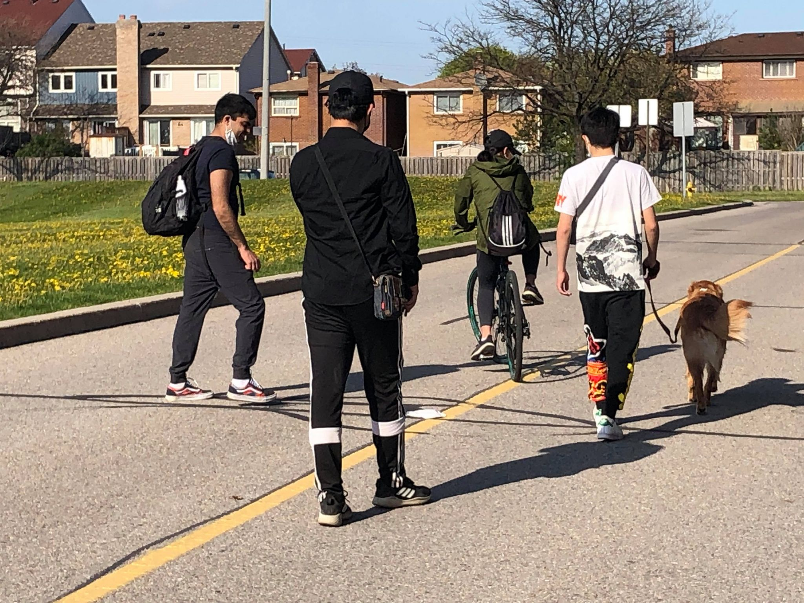

Our Goals
The early years are critical to your child’s positive growth and development and they are eager to learn new skills, experience challenging opportunities, and be encouraged for their strengths and talents.We strive to promote optimal development in all aspects of a child’s life. Our primary goal is promoting each child to develop a healthy self-concept, confidence, curiosity, and motivation to learn, and also the ability to establish cooperative relationships with other children and adults for lifelong basis.
We strive to ensure that every child receives creative and fun learning experiences that support the development of recognition, social, emotional and physical. Our activities and programs are all formulated to engage your child’s natural curiosity and provide a foundation for lifelong success. Preparing your child to succeed in school and in life is the core of our childcare curriculum inline with Ontario’s Pedagogy for the Early Year: How Does Learning Happen? And Early Learning For Every Child Today.
Philosophy
We believe that every child is unique and possesses his/her own temperament and learning style.We believe that children are competent, capable of complex thinking, curious and rich in potential. We are committed to the “emergent curriculum” approach to program planning, in which activities “emerge” based on ideas and interests from both children and staff. This spontaneous learning process prepares them for acquiring more complex skills of reading, writing and mathematical reasoning.
We believe play is integral to children’s learning and essential to quality of life in childhood. Exploration and play are a child’s primary way of understanding the world. Children are agents of their own learning, actively building knowledge, skills, dispositions, and feelings. We are committed to fostering each child’s self-esteem, well-being and growing need for independence. All aspects of their development and learning are interrelated and interdependent.
At JHCCLC, our youngest learners are supported in the development of positive and effective communication. Early on, children experience meaningful opportunities and individual support related to expression and self-regulation. Rich in potential and ability, children develop understanding and competence in emotional expression, emotional intelligence and self-awareness. Expression is supported through observation, documentation, listening, and authentic communication. Child-initiated positive communication creates a pathway to self-regulation and problem solving. Through positive, self-directed problem-solving and respectful discussion, the children form relationships and practice behaviours that are foundational to effective lifelong communication and assist in creating a sense of belonging.
We Use How Does Learning Happen? Ontario's Pedagogy for the Early Years (2014) to guide our programing and pedagogy. We provide a positive framework to support our children and families in an environment that promotes belonging, well-being, engagement, and expression.
We always:
- Commit to helping children develop independence, confidence and skills for the future.
- Recognise the uniqueness of each child.
- Keep children healthy and safe through shared and high quality practice.
- Become the catalyst for children making progress and achieving at their own pace.
- Promote equality and diversity.
- Make confidence an on-going priority.
- Ensure that parents and families are involved, encouraged and consulted.
- Make sure planning and self-evaluation is effective.
- Establish an ambitious vision that everyone shares and understands.
- Promote well qualified staff where professional development.
- Establish meaningful and supportive activities – allow children to make choices.
- Give children the time to think and speak.
- Allow children to do things at their own pace.
- Give children the skills and confidence to take the lead.
- Always plan for improvement.